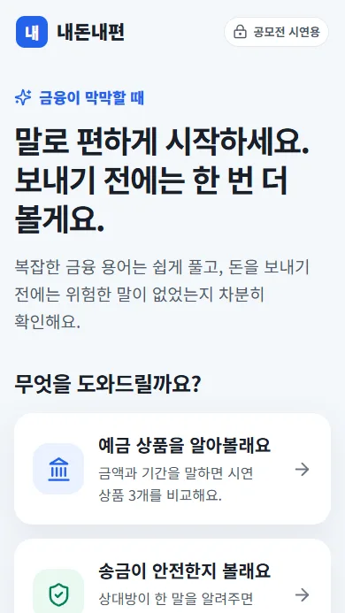
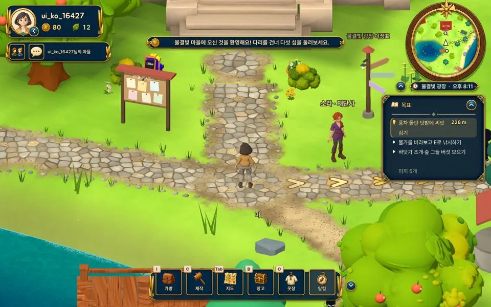

프로젝트 장부
2026년 11월 기준
| 프로젝트 | 무엇을 | 맡은 일 | 지금 상태 | 최근 갱신 |
|---|---|---|---|---|
| MARU | 외국인 여행자를 위한 서울 전통문화 코스 추천 | 기획, UI, AI 해설 프롬프트 | 정적 웹 공개. 서버는 뼈대까지 | 2026.11 |
| 내돈내편 | 고령층 음성 금융 안내와 송금 전 피싱 재확인 | 팀장, 기획과 개발 | 공개 배포. 실물 기기 확인 남음 | 2026.09 |
| Villagen | 글로 적으면 AI가 3D 가구를 만드는 마을 RPG | 기획, 게임 안 코드, 문제 해결 | Tripothon 수상. 생성 기능은 로컬 검증 | 2026.10 |
| Lolypoly | 폴리텍 춘천캠퍼스 학생용 생활정보 앱 | 기획과 개발, 2인 공동 작업 | 진행 중. 시험 사용 준비 | 2026.11 |
상태는 각 저장소의 진행 기록을 따릅니다. 확인하지 않은 기능은 완료로 적지 않았습니다.
직접 확인한 기록
저장소의 진행 기록에서 옮겼습니다. 날짜는 확인한 날입니다.
| 날짜 | 프로젝트 | 확인한 것 | 결과 |
|---|---|---|---|
| 2026-09-20 | 내돈내편 | 자동 테스트, 타입 검사, 프로덕션 빌드 | 78개 통과 |
| 2026-09-20 | 내돈내편 | 화면 폭 320px부터 1440px까지 회귀 검사 | 6개 폭 통과 |
| 2026-10-05 | Villagen | 온라인 서버의 협동 플레이 설정 | 최대 3인 |
| 2026-11-02 | Lolypoly | 빈 폴더에서 설치와 실제 수집 재현 | 54개 통과 |
| 2026-11-09 | Lolypoly | Django 테스트 전체 | 89개 통과 |

내돈내편
말로 금융 업무를 준비하고, 돈을 보내기 전에 한 번 더 확인합니다.
- 만든 것
- 예금 상품 3종 비교와 예상 이자, 송금 요청의 위험 신호 13종 분석, 강제 보류 6조건, 음성 입력과 읽어 주기
- 판단
- AI는 의도와 신호를 정리하고, 최종 위험 등급은 서버 규칙이 정합니다
- 구조
- Next.js 16, TypeScript, OpenAI Responses API. 키가 없으면 Mock 모드로 돕니다
- 남은 것
- 실물 휴대폰 청취와 셀룰러 환경 확인
2026 금융 AI Challenge 출품작, 2인 팀. 저장소는 비공개입니다.
자주 받는 질문
팀 프로젝트에서 직접 한 일은요?
위 장부의 '맡은 일' 칸에 적었습니다. Villagen은 팀원이 개발을 많이 맡았고, 저는 기획과 게임 안 코드, 문제 해결을 맡았습니다. 지금은 그 코드를 직접 설명하고 고칠 수 있도록 공부하고 있습니다.
AI 도구는 어떻게 쓰나요?
Codex와 Claude로 구현을 함께 하고, 결정과 진행은 저장소의 DECISIONS.md와 PROGRESS.md에 남깁니다. 테스트하지 않은 기능은 완료로 적지 않습니다.
유료 API가 없으면 어떻게 되나요?
키가 없어도 핵심 흐름이 돌도록 만듭니다. 내돈내편은 Mock 모드로, MARU의 아리는 앱 데이터 답변으로 바뀝니다.
Villagen
원하는 물건을 글로 적으면 AI가 3D 가구로 만들어 주는 마을 RPG입니다.
TRIPOTHON S1 SEOUL, Best Use of Tripo 수상
3인 팀 SAMHAP Games. 2026년 10월.

- 흐름
- 주민 부탁, AI 가구 생성, 선물과 배치, 마을 변화
- 구조
- Godot 클라이언트, Python 서버, SQLite, LLM과 Tripo로 GLB 생성
- 지금 상태
- 가구 공방은 로컬 검증. 공개 서버의 유료 생성은 꺼 두었습니다. 저장소
쓰는 도구
- 웹
- HTML, CSS, JavaScript, Django, Flask, Spring Boot
- 데이터
- Python, SQL, MySQL, SQLite, Supabase PostgreSQL
- 그 밖
- Godot, Unity, Flutter, Linux
- 자격증
- ADsP, 리눅스마스터 2급
연락하기
인턴, 공모전 팀, 프로젝트 이야기 모두 반갑습니다.
- GitHub
- lovesome0405